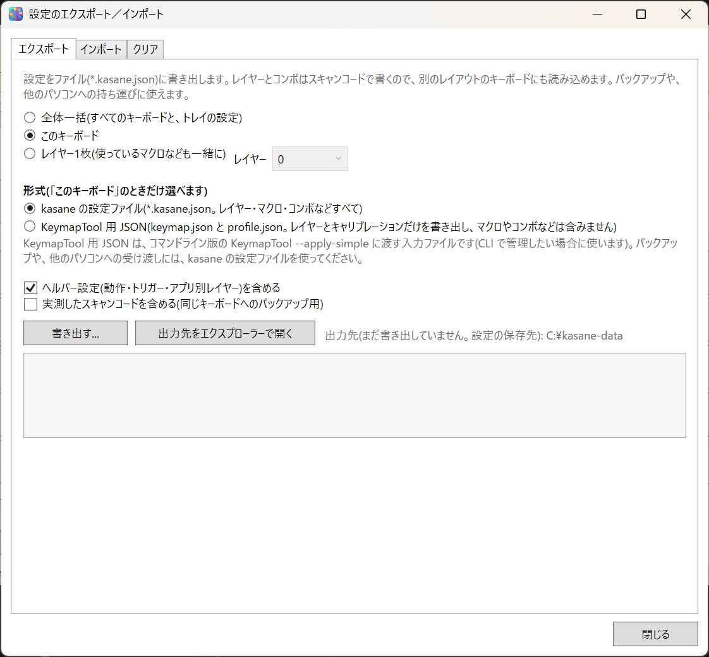
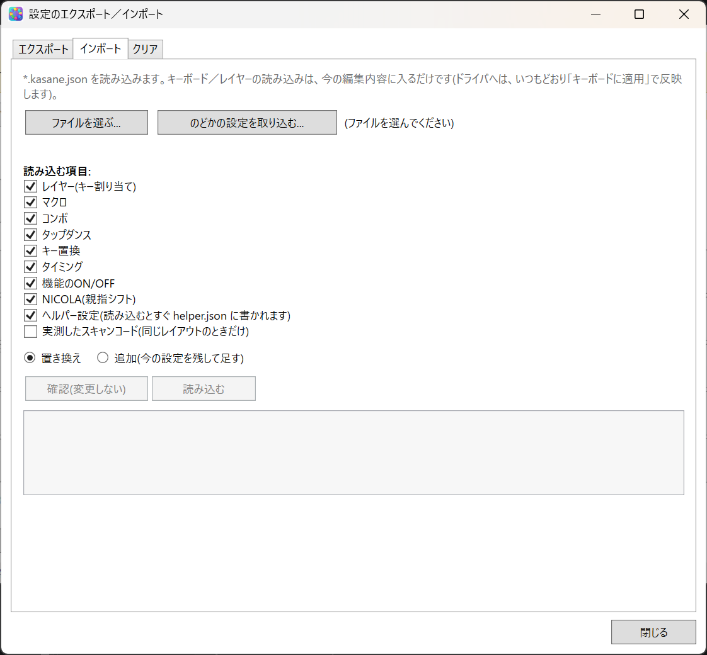
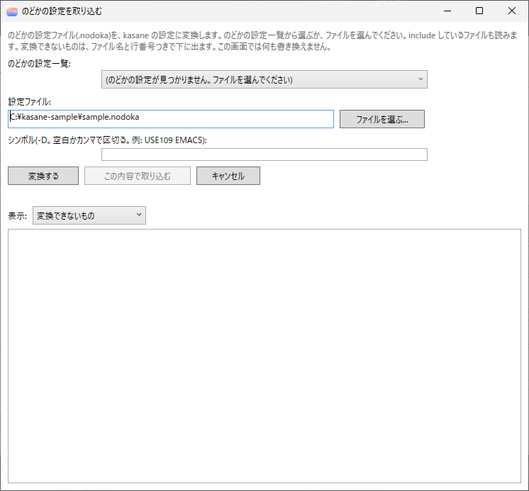
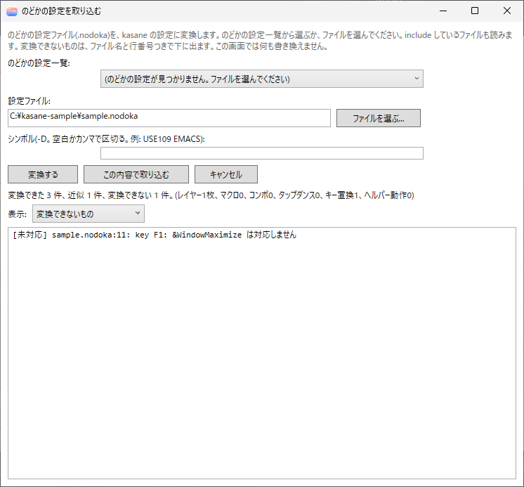
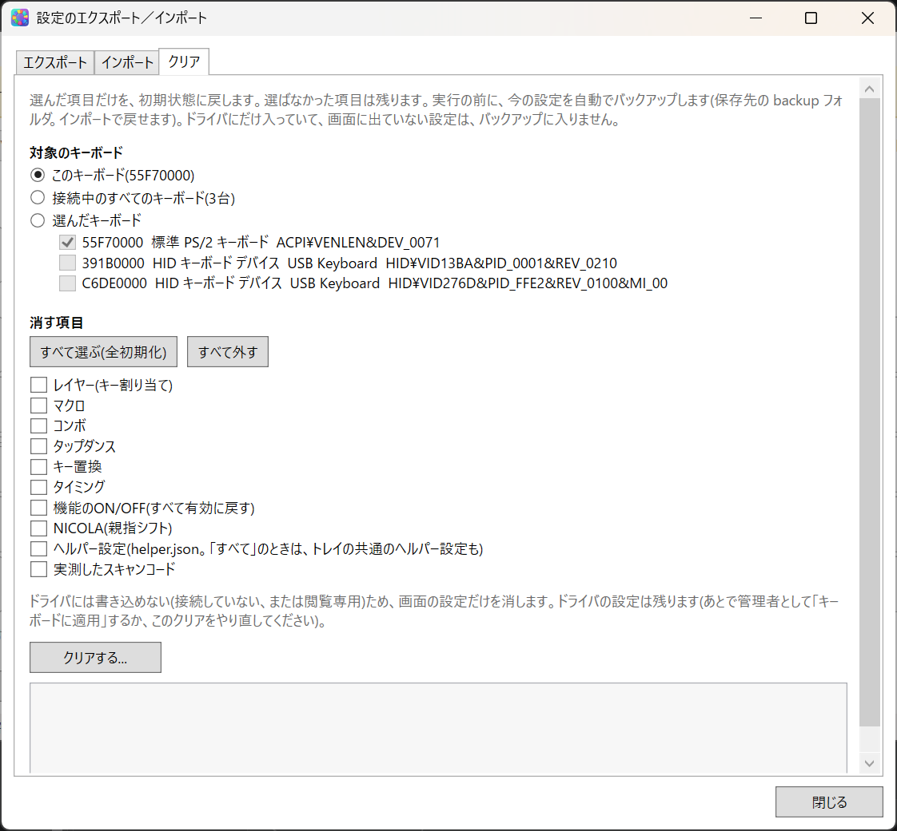

13. インポート／エクスポート
エディタの画面下の インポート／エクスポート... で、設定をファイル（*.kasane.json）に書き出したり、読み込んだりできます。バックアップ、別のキーボードや別のパソコンへの移行、設定の初期化に使います。

画面には、エクスポート、インポート、クリア の 3 つのタブがあります。
エクスポート
設定をファイルに書き出します。範囲を選びます。
| 範囲 | 内容 |
|---|---|
| 全体一括 | すべてのキーボードとトレイの設定 |
| このキーボード | 選んでいるキーボード 1 台の設定 |
| レイヤー1枚 | 1 つのレイヤー。そのレイヤーが使うマクロ、タップダンス、ヘルパー動作も一緒に入る |
レイヤーの一覧を右クリックして、このレイヤーをエクスポート... を選んでも、開けます。
キーはスキャンコードで書かれるので、レイアウトの違うキーボードにも読み込めます。実測値は、バックアップのとき（同じ機器へ戻すとき）だけ含まれます。
書き出す... でファイルを保存します。ヘルパー設定（動作・トリガー・アプリ別レイヤー）を含める と、実測したスキャンコードを含める（同じキーボードへのバックアップ用） のチェックボックスで、含めるものを選べます。
出力先をエクスプローラーで開く は、いつでも使えます。ボタンの右に、現在の出力先が表示されます。書き出したあとは、そのファイルを選んで開きます（KeymapTool 用 JSON のときはフォルダ）。書き出す前は、設定の保存先のフォルダを開きます。
KeymapTool 用 JSON
範囲に このキーボード を選ぶと、形式で KeymapTool 用 JSON を選べます。keymap.json と profile.json を、選んだフォルダに書き出します。コマンド版の KeymapTool --apply-simple に渡す入力ファイルです。コマンドで管理したいときだけ、この形式を使います。
マクロ、コンボ、タップダンス、キー置換は含まれません（KeymapTool の --set-macro などで、別に設定します）。バックアップや、ほかのパソコンへの受け渡しには、既定の *.kasane.json を使ってください。
インポート
書き出したファイルを読み込みます。

- インポート タブの ファイルを選ぶ... で、ファイルを選びます。
- 読み込む項目（レイヤー、マクロ、コンボなど）を選びます。実測したスキャンコードは、同じレイアウトのときだけ読み込めます。
- ファイルの中のキーボードを、接続中のキーボードに対応づけます。自動で割り当てられます。合わないときは、画面で選びます（14. バックアップと移行）。
- 読み込み方を 置き換え か 追加 から選びます。
- 置き換え: 選んだ項目を、ファイルの内容に置き換えます。
- 追加: 今の設定を残して、ファイルの内容を足します。番号が重なるマクロなどは、付け直されます。
- 確認(変更しない) を押すと、何も変えずに、読み込んだときの結果を確かめられます。問題がなければ、読み込む を押します。
読み込んだ内容は、編集中の状態に入るだけです。キーボードに適用(ON) は、そのあとで押します。保存は自動です（ヘルパー設定だけは、すぐに保存されます）。
今のレイアウトにないキーは、読み込まれずに、画面に出ます。
全体一括の読み込みの前には、今の設定が、設定フォルダの backup に自動でバックアップされます。
のどかの設定を取り込む
のどか（nodoka4）の設定ファイル（.nodoka）を、kasane の設定に変換して取り込めます。

- インポート タブの のどかの設定を取り込む... を押します。
- のどかの設定の一覧（★が、今使っているもの）から選ぶか、ファイルを選ぶ... で
.nodokaを指定します。のどかの-Dにあたるシンボル（USE109など）は、一覧から選ぶと入ります。直してもかまいません。 - 変換する を押します。結果が「変換できた」「近似した」「変換できない」に分かれて、
ファイル名:行つきで出ます。表示 で切り替えられます。 - この内容で取り込む を押すと、インポート画面に戻ります。ほかのインポートと同じように、項目と行き先を選んで取り込みます。のどかの設定は、追加 が既定です。「置き換え」にすると、のどかにない項目も消えます。

include されているファイルも読み込まれます。文字コードは、BOM（UTF-16、UTF-8）、UTF-8、CP932 の順に判定されます。
変換のしかた
のどかの設定は「キー × 修飾キーの状態 × キーマップ」の表で、kasane は「レイヤーごとの、キー → 動作」の表です。そこで、次のように平らにします。
| のどか | kasane |
|---|---|
key *X = *Y（Global） |
レイヤー 0: X → Y |
key C-X = Home |
キー置換（Ctrl、X → Home） |
| 右辺が複数のキー | マクロ（押したときに順に打つ。64 ステップまで）。長いもの、待ちや文字列を含むものは、ヘルパーの手順 |
mod M0 = !Up と key M0-Left = … |
Up に MO(レイヤー)、そのレイヤーに Left の割り当て |
mod M0 = !!Space |
LT(レイヤー, Space) |
mod shift += !!Space（SandS） |
MT(MOD_LSFT, KC_SPC) |
&Toggle(Lock0) |
TG(レイヤー) |
&Prefix(km) |
OSL(レイヤー) |
&EditNextModifier(M-) |
OSM(MOD_LALT) |
&ShellExecute、&SendText、&Wait、&MouseMove、&MouseWheel |
ヘルパーの動作を HLP(n) にする |
combo A B = X（2 キー） |
コンボ |
taphold X tap=A hold=LShift |
MT(MOD_LSFT, A) |
tapdance X tap1= tap2= tap3= |
タップダンス |
window W /class/ |
W 用のレイヤーと、アプリ別レイヤーの規則 |
def option UnitID = … |
そのキーボード向けの設定として別に作る |
レイヤーは、Global がレイヤー 0、ほかは、割り当てに出てきた順に 1、2、… と振ります。16 枚を超えたものは、変換されず、報告に出ます。追加で取り込むと、今のレイヤーに、同じ番号で重なります。今のレイヤー 1 以降を使っているときは、先に退避するか、行き先を確かめてください。
変換できないもの
次のものは、変換されず、ファイル名:行 つきで報告されます。その行だけが無かったことになり、ほかの行は変換されます。
- 条件:
IL-（IME オン）、IC-（変換中）、NL-、CL-、SL-、KL-、MAX-、MIN-、DP-（2 回押し）、U-、D-、R-、T-（タッチパッド）、K0- - 関数:
&Window*、&Clipboard*、&Emacs*、&PostMessage、&SendPostMessage、&SetForegroundWindow、&LoadSetting、&HelpMessage、&Repeat、&MouseHook、&SetIme*など - マウスやゲームパッドの疑似キー（
LButton、GP_*など）を、左辺や右辺に使うもの - 3 キー以上の combo、Global 以外の combo、taphold、tapdance、
event - 修飾キーを押しながらの「複数キーの列」と「レイヤーの操作」
のどかと少し違う動きになるもの
- 「修飾キーを押していないときだけ」という条件は、kasane では見分けません。
- 複数のキーの列は、最後のキーを押している間だけ押し続ける、という動きにはなりません。
- 「!」の付かない
mod M0 = Xは、のどかではキー自体の動作も残りますが、kasane ではレイヤーキーとして働きます。 &PrefixはOSL（次の 1 キーだけ）です。- 修飾キーを押しながらのヘルパー動作は、キーフックのトリガーです。アプリには届かず、トレイが動いている必要があります。
詳しくは、docs/IMPORT-NODOKA.md にあります。
クリア
選んだ項目だけを、初期状態に戻します。選ばなかった項目は残ります。

| 選ぶもの | 内容 |
|---|---|
| 項目 | レイヤー、マクロ、コンボ、タップダンス、キー置換、タイミング、機能の ON と OFF、NICOLA、ヘルパー設定、実測したスキャンコード。すべて選ぶ(全初期化) と すべて外す のボタンもある |
| 対象 | このキーボード、接続中のすべてのキーボード、選んだキーボード（一覧にチェックを付ける） |
- 項目を選んだら、クリアする... を押します。
- 管理者として動かしているときは、ドライバに保存された設定も同時に消します。閲覧専用のときは、画面の設定だけです。
- 「同じ型番で共有」のキーボードは、ドライバの設定を消すと、同じ型番のキーボードすべてに効きます。確認の画面に出ます。
- 実行の前に、今の設定が、設定フォルダの
backupに自動でバックアップされます（before-clear-…kasane.json）。インポートで戻せます。ドライバにだけ入っていて、画面に出ていない設定は、バックアップに入りません。 - ヘルパー設定 を消すと、キーボードごとの
helper.jsonが消えます。接続中のすべてのキーボード を対象にしたときは、トレイの共通のヘルパー設定も消えます。
取り込み前のバックアップから戻す
インポートやクリアの前に作られたバックアップは、設定フォルダの backup にあります。エクスポートしたファイルと同じ形式なので、インポート で読み込めば戻せます。